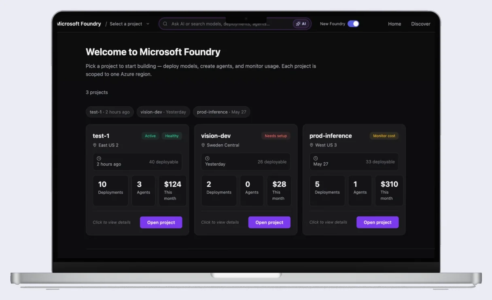

Hi, I’m Jasmine!
A product designer making complex, technical, and AI products feel usable.
Selected work

AI Platforms · Microsoft · 2026
Foundry: Models Redesign
Turning an 11,000-model catalog on Microsoft Foundry into a filterable, comparable flow. On a team of five I ran the research and led concept and IA on two threads we recommended: region in the filter rail, and a deeper compare.

UX Research · Microsoft · 2026
Foundry: Agent Builder
A moderated usability study on Microsoft's agent-building platform. All eight participants hit the same blocker. I reported it with a severity rating, the team re-ranked a bug it had deprioritized, and five findings went to the Foundry design team.
Identity & Trust · Mobile app
Nox+
A privacy-first identity app. I led design and research on a team of four. The defining call: we cut two of our own AI features when research showed the real blocker was trust, not convenience.


Design Systems · Web · Climate Tech
Nexstera Tech
Eight weeks with a climate-tech founding team. After the CEO said my first version recreated the problem, I rebuilt the investor and education pages around a story users could follow, and built the design system the team now builds on.